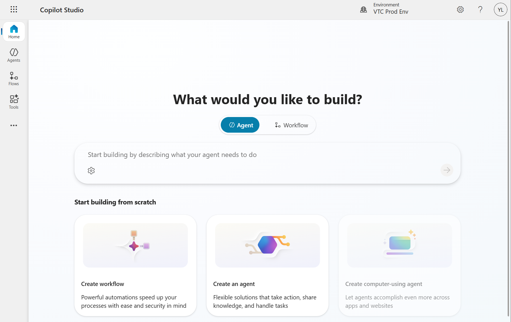

What is Microsoft Copilot Studio?
Microsoft Copilot Studio is a low-code platform that lets you build custom AI-powered assistants, called copilots, tailored to your specific needs. Unlike general-purpose chatbots, copilots built with Copilot Studio can understand your organisation's data, follow business processes, and integrate with the tools you already use.

Key Capabilities
- Built-in LLM — Powered by Microsoft's large language models, providing natural language understanding and generation without requiring external API integration
- Secure Knowledge Storage — Your copilot's knowledge base, conversations, and data are stored within the Microsoft enterprise environment with appropriate access controls and data governance
- Secured Data Processing — All data processing occurs within Microsoft's secure infrastructure, ensuring your organisation's data does not leave the trusted environment
- Topic-Based Conversations — Define guided conversation flows for specific tasks like bookings, support requests, or data lookups
- Data Source Integration — Connect your copilot to websites, documents, SharePoint, or custom APIs to provide accurate, context-aware answers
- Organisational Data Grounding — Ground your copilot's responses in your organisation's specific data and policies, reducing hallucinations and improving answer accuracy
- Multi-Language Support — Build copilots that communicate in multiple languages for broader accessibility across the VTC community
Getting Started
When accessing the platform, please be reminded to use the link and account type that matches your agent's intended users:
- For student-facing agents: Sign in using your VTC t-account via this link: www.vtc.edu.hk/aiAgentForStudent
- For staff-facing agents: Sign in using your VTC staff account via this link: www.vtc.edu.hk/aiAgentForStaff
Note: Platform features may change. Verify current Copilot Studio features before publishing.
aiHackathon Notice
Microsoft Copilot Studio is available for contestants to use during the aiHackathon. Leverage this tool to build AI-powered assistants that enhance your project's user experience.